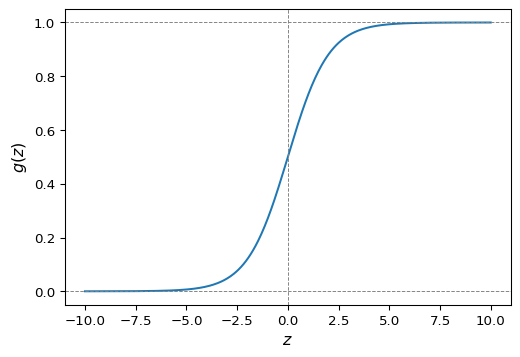

Regresión lineal y regresión logística
Capítulo 2 - Sección 1
\[ \def\NN{\mathbb{N}} \def\ZZ{\mathbb{Z}} \def\RR{\mathbb{R}} \def\media{\mathbb{E}} \def\cov{\text{Cov}} \def\prob{\mathbb{P}} \def\calL{\mathcal{L}} \def\calG{\mathcal{G}} \def\calD{\mathcal{D}} \def\calN{\mathcal{N}} \def\aa{{\bf a}} \def\bb{{\bf b}} \def\cc{{\bf c}} \def\dd{{\bf d}} \def\hh{{\bf h}} \def\qq{{\bf q}} \def\xx{{\bf x}} \def\yy{{\bf y}} \def\zz{{\bf z}} \def\uu{{\bf u}} \def\vv{{\bf v}} \def\ww{{\bf w}} \def\XX{{\bf X}} \def\TT{{\bf T}} \def\SS{{\bf S}} \def\bfZ{{\bf Z}} \def\bfg{{\bf g}} \def\bftheta{\boldsymbol{\theta}} \def\bfmu{\boldsymbol{\mu}} \def\bfxi{\boldsymbol{\xi}} \def\bflambda{\boldsymbol{\lambda}} \def\bfgamma{\boldsymbol{\gamma}} \def\bfbeta{\boldsymbol{\beta}} \def\bfalpha{\boldsymbol{\alpha}} \def\bfeta{\boldsymbol{\eta}} \def\bfmu{\boldsymbol{\mu}} \def\bfnu{\boldsymbol{\nu}} \def\bfTheta{\boldsymbol{\Theta}} \def\bfSigma{\boldsymbol{\Sigma}} \def\bfone{\mathbf{1}} \def\bfzero{\mathbf{0}} \def\argmin{\mathop{\mathrm{arg\,min\,}}} \def\argmax{\mathop{\mathrm{arg\,max\,}}} \]
En esta sección estudiaremos dos modelos fundamentales de aprendizaje supervisado: la regresión lineal, utilizada para variables de respuesta cuantitativas, y la regresión logística, empleada cuando la respuesta es categórica. Ambos modelos pueden ser formulados como problemas de optimización, lo que permite aplicar los conceptos vistos en el capítulo anterior. Para ambos modelos, analizaremos su formulación probabilística, las características del problema y los métodos de resolución más utilizados.
Durante este capítulo, consideraremos \(\XX=(X_1,\ldots,X_p)\in\RR^p\) un conjunto de variables predictoras y \(Y\in\RR\) una variable respuesta. Además, vamos a suponer que la distribución condicional de \(Y|\XX\) depende de un vector de parámetros \(\bftheta\in\RR^q\).
Para un conjunto de datos \(\{(\xx_i,y_i)\}_{i=1}^n\), denotamos \(X\in\RR^{n\times p}\) la matriz de predictoras y \(\yy\in\RR^n\) el vector de respuestas.
En lo que sigue, vamos a trabajar sin intercepto; es decir, consideraremos la relación lineal \(\bftheta^\top\XX\). Luego, si se necesitara un intercepto \(\theta_0\), los resultados se adaptan de forma directa reemplazando la matriz de datos \(X\) por la matriz ampliada \[ \widetilde{X}=\begin{pmatrix}\mathbf{1} & X\end{pmatrix}\in\RR^{n\times (p+1)}. \]
La tarea de obtener un estimador \(\hat{\bftheta}\) de \(\bftheta\) puede ser formulada a través de un problema de optimización de la forma \[ \begin{array}{ll} \text{minimizar } & J(\bftheta), \end{array} \]
en principio sin restricciones. Aquí, la función objetivo \(J:\RR^q\to\RR\), conocida como función de pérdida, mide que tan bien los parámetros \(\bftheta\) se ajustan a los datos observados. El punto óptimo del problema es el estimador buscado, por lo tal escribiremos \(\hat{\bftheta}\) o \(\bftheta^\star\), indistintamente.
Bajo la suposición de que los datos son i.i.d. (independientes e idénticamente distribuidos), con distribución de densidad condicional \(p(y|\xx; \bftheta)\), una estrategia para formular \(J(\bftheta)\) es el principio de máxima verosimilitud, que consiste en elegir \(\hat{\bftheta}\) de manera tal que se maximice la función de verosimilitud
\[ L(\bftheta):=\prod_{i=1}^np(y_i|\xx_i; \bftheta). \tag{1} \]
La función \(L(\bftheta)\) mide la compatibilidad de los datos con el modelo \(p(y|\xx; \bftheta)\) para un valor de \(\bftheta\) dado. En general, es más conveniente utilizar el logaritmo de la verosimilitud: \[ \ell(\bftheta):=\log L(\bftheta)=\sum_{i=1}^n\log p(y_i|\xx_i; \bftheta). \tag{2} \]
Regresión lineal
Supuestos del modelo
\[ \begin{array}{c} Y=\theta_1X_1+\cdots+\theta_p X_p+\varepsilon\\[2pt] \varepsilon\sim \calN(0,\sigma^2) \end{array} \]
El conjunto de parámetros del modelo de regresión lineal es \(\bftheta\in\RR^p\), mientras que \(\varepsilon\in\RR\) es un término de error que captura efectos no modelados (como características omitidas o ruido aleatorio). Podemos escribir el modelo de forma abreviada como \[ Y = \bftheta^\top \XX + \varepsilon. \]

El supuesto \(\varepsilon\sim \calN(0,\sigma^2)\) significa que la función de densidad de la variable aleatoria \(\varepsilon\) es \[ p(\varepsilon) = \frac{1}{\sqrt{2 \pi \sigma^2}} \exp\left(-\frac{\varepsilon^2}{2 \sigma^2}\right). \]
Distribución condicional
Dado \(\XX=\xx\), tenemos que \[ Y=\underbrace{\bftheta^\top\xx}_{\text{cte}}+\varepsilon. \]
Por lo tanto, el supuesto \(\varepsilon\sim\calN(0,\sigma^2)\) implica que \[ Y|\XX=\xx\sim \calN(\bftheta^\top\xx,\sigma^2). \]
Finalmente:
La función de densidad condicional de \(Y|\XX\) en el modelo de regresión lineal es \[ p(y |\xx; \bftheta) = \frac{1}{\sqrt{2 \pi \sigma^2}} \exp\left(-\frac{(y-\bftheta^\top \xx)^2}{2 \sigma^2}\right). \]
Función de verosimilitud
Para un conjunto de datos \(\{\xx_i, y_i\}_{i=1}^n\) i.i.d., la función de verosimilitud es
\[ L(\bftheta) = \prod_{i=1}^{n} \frac{1}{\sqrt{2 \pi \sigma^2}} \exp\left(-\frac{(y_i - \bftheta^\top\xx_i)^2}{2 \sigma^2}\right). \]
Entonces
\[ \begin{align*} \ell(\bftheta) &= \log L(\bftheta) \\ &= \log \prod_{i=1}^{n} \frac{1}{\sqrt{2 \pi}\sigma} \exp\left(-\frac{(y_i - \bftheta^\top \xx_i)^2}{2 \sigma^2}\right) \\ &= \sum_{i=1}^{n} \left[\log\frac{1}{\sqrt{2 \pi}\sigma} - \frac{1}{2 \sigma^2} (y_i - \bftheta^\top \xx_i)^2\right]\\ &= n \log \frac{1}{\sqrt{2 \pi}\sigma} - \frac{1}{2 \sigma^2} \sum_{i=1}^{n} (y_i - \bftheta^\top \xx_i)^2 \end{align*} \]
Importante
Observar, en esta última expresión, que maximizar \(\ell(\theta)\) es equivalente a minimizar
\[ J(\bftheta)=\frac{1}{2} \sum_{i=1}^{n} (y_i - \bftheta^\top \xx_i)^2=\frac{1}{2}\|X\bftheta-\yy\|_2^2, \]
lo cual es la función de costo asociada a mínimos cuadrados.
Optimalidad
Si bien en la Definición 2 de C1-S1 ya hemos analizado el problema de mínimos cuadrados, vamos a volver a derivar la solución del problema
\[ \begin{array}{ll} \text{minimizar } & \displaystyle\frac{1}{2}\|X\bftheta-\yy\|_2^2. \end{array} \]
Dado que es un problema de optimización sin restricciones con función objetivo convexa, la condición de optimalidad \(\nabla J(\bftheta)=\bfzero\) es suficiente y necesaria. Por lo tanto, tenemos que \[ \begin{align*} \nabla J(\hat{\bftheta})&=\bfzero\\ X^\top X\hat{\bftheta}-X^\top\yy&=\bfzero\\ X^\top X\hat{\bftheta} &=X^\top\yy\\ \hat{\bftheta}&=X^{+}\yy. \end{align*} \]
Si \(X\) es de rango completo, entonces \[ \hat{\bftheta}=(X^\top X)^{-1}X^\top\yy \]
El vector de valores ajustados \(\hat{\yy}\in\RR^n\) está dado por \[ \hat{\yy}:=X\hat{\bftheta}. \]
Observar que, si \(X\) es de rango completo, entonces \(\hat{\yy}=X(X^\top X)^{-1}X^\top\yy\). Esto significa que \(\hat{\yy}\) es la proyección de \(\yy\) sobre el espacio columna de \(X\).
Algoritmo LMS
La aplicación del método de descenso por gradiente al problema de optimización en regresión lineal da lugar a lo que se denomina algoritmo LMS (least mean squares). La regla de actualización es \[ \bftheta_{t+1}:=\bftheta_t-\eta \nabla J(\bftheta_t),\qquad\eta>0. \]
Luego, debemos sustituir el gradiente por su expresión \(\nabla J(\bftheta_t) = X^\top X\bftheta_t-X^\top\yy\). Esta regla de actualización tambien se conoce como regla de aprendizaje Widrow-Hoff.
Algoritmo LMS
Dado un parámetro inicial \(\hat{\bftheta}_0\in\RR^{p}\) y una tasa de aprendizaje \(\eta>0\):
repetir para \(t = 0,1,2,\ldots\):
Actualizar \(\bftheta_{t+1}:=\bftheta_t-\eta \left(X^\top X\bftheta_t-X^\top\yy\right)\).
hasta que el criterio de parada se satisfaga.
En el algoritmo anterior se está trabajando con todas las observaciones a la vez en cada paso de actualización, por lo que se trata de un descenso de gradiente por lotes. Esta estrategia asegura una actualización estable del parámetro \(\bftheta\), aunque puede ser costosa si el número de observaciones es muy grande.
Por supuesto, como vimos en C1-S5, como alternativa podemos usar descenso de gradiente estocástico o mini-batch. Para ello, notar que para una observación \((\xx_i,y_i)\), la función de pérdida es \[ J(\bftheta)=\frac{1}{2}(y_i-\bftheta^\top\xx_i)^2, \] tal que \[ \nabla J(\bftheta) = -(y_i-\bftheta^\top\xx_i)\,\xx_i. \]
Algoritmo LMS estocástico
Dado un parámetro inicial \(\hat{\bftheta}_0\in\RR^{p}\) y una tasa de aprendizaje \(\eta>0\):
repetir para \(t = 0,1,2,\dots\):
1° Elegir un índice \(i\) al azar de \(\{1,\dots,n\}\).
2° Actualizar \(\bftheta_{t+1}:=\bftheta_t+\eta\,(y_i-\bftheta^\top\xx_i)\,\xx_i\).
hasta que el criterio de parada se satisfaga.
Observar que la magnitud de la actualización del algoritmo LMS estocástico es proporcional al término de error \((y_i - \bftheta^\top\xx_i)\). Si elegimos un ejemplo para el cual \(\bftheta_t^\top\xx_i\approx y_i\), entonces el cambio en el parámetro será mínimo. Esto puede activar prematuramente el criterio de parada basado en la magnitud del gradiente, por lo cual para para evitar detener el algoritmo demasiado pronto, suele ser recomendable basar el criterio de parada en el promedio del error sobre un conjunto de observaciones. También se puede imponer un número mínimo de iteraciones para asegurar que el algoritmo recorra suficientes ejemplos y aprenda de manera estable.
Ejemplo 1 Título de ejemplo
Acá va un ejemplo con los datos California Housing y librerías de Python.
Regresión logística
Consideremos ahora un problema de clasificación binaria, con variable respuesta \(Y\in\{0,1\}\).
Por ejemplo, si estamos tratando de construir un clasificador de spam para correos electrónicos, entonces una observación \(\xx\) contendrá características de un correo electrónico, mientras que su etiqueta \(y\) será 1 si es spam o 0 en caso contrario.
Podríamos abordar el problema de clasificación ignorando el hecho de que \(y\) toma valores discretos y usar el método de regresión lineal. Sin embargo, no tendría sentido que la predicción para un valor de \(\xx\) sea un valor fuera del rango de 0 y 1. Para resolver este problema, podemos utilizar la función logística.
Función logística
Para \(z\in\RR\), se define la función logística o función sigmoide \(g:\RR\to\RR\) mediante \[ g(z) := \frac{1}{1 + e^{-z}} = \frac{e^z}{1+e^z}. \]
Algunas características son:
El conjunto imagen es \(g(\RR)=(0,1)\)
\(g(0) = 0.5\)
\(\displaystyle\lim_{z\to -\infty}g(z)=0\) y \(\displaystyle\lim_{z\to\infty} g(z)=1\).
Dado \(\bftheta\in\RR^p\), definimos la función \(h_{\bftheta}:\RR^p\to\RR\) como \[ h_\bftheta(\xx) := g(\bftheta^\top \xx) = \frac{1}{1 + e^{-\bftheta^\top \xx}}. \]
En este caso, vamos a realizar el desarrollo sin intercepto. Por supuesto, puede añadirse \(\theta_0\) y trabajar con \(X\), tal como lo hicimos en regresión lineal. Por otra parte, vamos a denotar con \(\mathbb{P}(A)\) la probabilidad de que ocurra un suceso \(A\).
Ya estamos en condiciones de configurar el modelo de regresión logística:
Supuesto del modelo
\[ \begin{array}{c} Y\in\{0,1\} \\[2pt] \mathbb{P}(y=1\mid\xx;\bftheta)=h_\bftheta(\xx) \end{array} \]
Distribución condicional
Bajo el modelo de regresión logística, resulta \[ Y|\XX=\xx\sim\text{Binom}(1,h_{\bftheta}(\xx)), \]
de manera tal que \[ \begin{align*} p(y \mid \xx; \bftheta)&=(h_{\bftheta}(\xx))^y(1-h_{\bftheta}(\xx))^{1-y} \\[2pt] &=\left( \frac{e^{\bftheta^\top\xx}}{1 + e^{\bftheta^\top \xx}} \right)^y\,\left( 1-\frac{e^{\bftheta^\top\xx}}{1 + e^{\bftheta^\top \xx}} \right)^{1-y} \\[3pt] &=\left( \frac{e^{\bftheta^\top\xx}}{1 + e^{\bftheta^\top \xx}} \right)^y\,\left( \frac{1}{1 + e^{\bftheta^\top \xx}} \right)^{1-y} \\ &=\frac{e^{\bftheta^\top\xx\, y}}{1+e^{\bftheta^\top\xx}}. \end{align*} \]
Finalmente:
La función de probabilidad condicional de \(Y|\XX\) en el modelo de regresión logística es \[ p(y \mid \xx; \bftheta) = \frac{e^{\bftheta^\top\xx_i\, y}}{1+e^{\bftheta^\top\xx}}. \]
Función de verosimilitud
Para un conjunto de datos \(\{\xx_i, y_i\}_{i=1}^n\) i.i.d., la función de verosimilitud es
\[ L(\bftheta) = \prod_{i=1}^{n} \frac{e^{\bftheta^\top\xx_i\, y_i}}{1+e^{\bftheta^\top\xx_i}}. \]
Como antes, será más sencillo maximizar el logaritmo de la función de verosimilitud:
\[ \begin{align*} \ell(\bftheta) &= \log L(\bftheta) \\ &=\log \prod_{i=1}^{n} \frac{e^{\bftheta^\top\xx_i\, y_i}}{1+e^{\bftheta^\top\xx_i}} \\ &= \sum_{i=1}^n \left[\bftheta^\top\xx_i\,y_i-\log(1+e^{\bftheta^\top\xx_i})\right]. \end{align*} \]
Importante
En regresión logística, maximizar \(\ell(\theta)\) es equivalente a minimizar \[ J(\bftheta)=-\sum_{i=1}^{n}\left[y_i\log(\hat{y}_i)+(1-y_i)\log(1-\hat{y}_i)\right], \tag{3} \]
con \[ \hat{y}_i:=h_{\bftheta}(\xx_i)=\frac{1}{1+e^{-\bftheta^\top\xx_i}}. \]
La función \(J(\theta)\) en (3), conocida como entropía cruzada, es la forma habitual de expresar la función de pérdida en problemas de clasificación binaria. Mide la disimilaridad entre las etiquetas reales \(y_i\) y las probabilidades \(\hat{y}_i\) predichas por el modelo.
Optimalidad
Vamos a analizar el problema \[ \begin{array}{ll} \text{minimizar} & \sum_{i=1}^n\left[\log(1+e^{\bftheta^\top\xx_i})-\bftheta^\top\xx_i y_i\right]. \end{array} \tag{4} \]
La función objetivo es convexa. Por lo tanto, la condición de optimalidad \(\nabla J(\bftheta)=\bfzero\) es una condición necesaria y suficiente para el punto óptimo \(\hat{\bftheta}\).
La forma matricial de la función objetivo es \[ J(\bftheta)=\mathbf{1}^\top\log\left(1+e^{X\bftheta}\right)-\yy^\top X \bftheta, \]
donde las operaciones \(\log\) y \(e\) se aplican elemento a elemento; es decir, \(\zz=\log\left(1+e^{X\bftheta}\right)\in\RR^n\) verifica \(\zz_i=\log(1+e^{\bftheta^\top\xx_i})\). Se tiene que
\[ \nabla J(\hat{\bftheta})= X^\top \hat{\yy}-X^\top\yy = X^\top(\hat{\yy}-\yy), \tag{5} \]
donde \(\hat{\yy}\in\RR^n\) es el vector de valores ajustados dado por \[ \hat{\yy} := (h(\bftheta^\top\xx_1),\ldots,h(\bftheta^\top\xx_n))^\top. \]
La expresión (5) nos da una expresión de \(\nabla J(\bftheta)\) que depende de \(\hat{\yy}=h_{\bftheta}(X)=g(X\bftheta)\), con \(g\) la función sigmoide. Debido a la dependencia no lineal de \(\hat{\yy}\) respecto de \(\bftheta\), no es posible obtener una solución explícita de \(\nabla J(\hat{\bftheta})=\bfzero\).
Aplicación de descenso por gradiente
Algoritmo de descenso por gradiente para regresión logística
Dado un parámetro inicial \(\hat{\bftheta}_0\in\RR^{p}\) y una tasa de aprendizaje \(\eta>0\):
repetir para \(t = 0,1,2,\ldots\):
Actualizar \(\bftheta_{t+1}:=\bftheta_t-\eta\, X^\top(\hat{\yy}-\yy)\).
hasta que el criterio de parada se satisfaga.
Por último, obtengamos el algoritmo de descenso por gradiente estocástico. Para una observación \((\xx_i,y_i)\) se tiene \[ J(\bftheta)=\log(1+e^{\bftheta^\top\xx_i})-\bftheta^\top\xx_iy_i, \]
tal que \[ \nabla J(\bftheta)=\frac{e^{\bftheta^\top\xx_i}}{1+e^{\bftheta^\top\xx_i}}\xx_i-\xx_i y_i=\xx_i (h_{\bftheta}(\xx_i)-y_i)=-\xx_i(y_i-h_{\bftheta}(\xx_i)). \]
Algoritmo de descenso por gradiente estocástico para regresión logística
Dado un parámetro inicial \(\hat{\bftheta}_0\in\RR^{p}\) y una tasa de aprendizaje \(\eta>0\):
repetir para \(t = 0,1,2,\ldots\):
1° Elegir un índice \(i\) al azar de \(\{1,\dots,n\}\).
2° Actualizar \(\bftheta_{t+1}:=\bftheta_t+\eta\,(y_i-h_{\bftheta}(\xx_i))\,\xx_i\).
hasta que el criterio de parada se satisfaga.
Ejemplo 2 Título de ejemplo
Acá va un ejemplo con los datos Breast Cancer y librerías de Python.
Para finalizar esta sección, comparemos los factores en la actualización del método de descenso por gradiente estocástico para los modelos vistos:
\[ \begin{array}{ll} \bftheta_{t+1}:=\bftheta_t+\eta(y_i-\bftheta^\top\xx_i)\,\xx_i & \qquad\text{(Regresión lineal)} \\ \bftheta_{t+1}:=\bftheta_t+\eta(y_i-h_{\bftheta}(\xx_i))\,\xx_i & \qquad\text{(Regresión logística)} \\ \end{array} \]
En ambos casos, la actualización depende del error entre el valor observado y la predicción del modelo: \[ y_i-\hat{y}_i, \] donde \(\hat{y}_i=\bftheta^\top\xx_i\) para regresión lineal y \(\hat{y}_i=\displaystyle\frac{e^{\bftheta^\top\xx_i}}{1+e^{\bftheta^\top \xx_i}}\) para regresión logística.
Esta estructura común refleja la idea de ajustar los parámetros en función de la discrepancia entre observaciones y predicciones, lo cual generalizaremos en la próxima sección cuando tratemos los modelos lineales generalizados.
Actividades
✏️ ConceptualesProbar que la derivada de la función logística \(g(z)=1/(1+e^{-z})\) verifica \[g'(z)(1-g(z)).\]
Sea un conjunto de datos \(\{(\mathbf{x}_i, y_i)\}_{i=1}^n\). Defina las variables centradas por columna como \[ {\tilde{x}}_{ij} = x_{ij} - \bar{x}_j, \quad {\tilde{y}}_i = y_i - \bar{y}, \] donde \(\bar{x}_j\) y \(\bar{y}\) son las medias muestrales de la variable predictora \(j\)-ésima y de la variable respuesta, respectivamente. Muestre que, al ajustar un modelo lineal sin intercepto sobre los datos centrados y obtener coeficientes \(\hat{\bfbeta}\), el intercepto del modelo ajustado sobre los datos originales puede recuperarse con la fórmula
\[ \hat{\beta}_0 = \bar{y} - \sum_{j=1}^p \hat{\beta}_j \bar{x}_j. \]
Referencias
Hastie, T., Tibshirani, R., & Friedman, J. (2009). The Elements of Statistical Learning: Data Mining, Inference, and Prediction (2nd ed.). Springer.
Ng, A. Apuntes del curso Stanford CS229: Machine Learning. Disponible aquí.